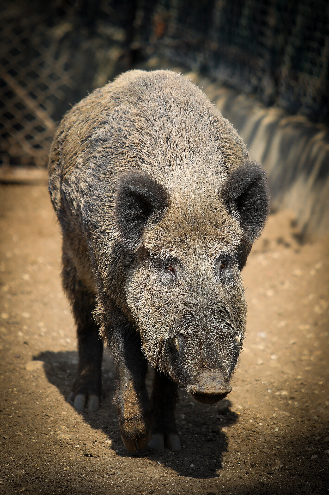

第 7 章
胃里的合众国
解剖记录本第一页贴着一张粉红色的尸体移交单，纸质粗糙，四角被胶带磨得发亮。单据右上角用订书针钉着一小段黄色塑料标签，标签正面写着一个编号，油墨被血水浸得洇开了。表格印着三栏：采集地

点、体重、性别。阿查法拉亚盆地北岸，一百六十二磅，雌性。再往下一行，采集日期是1997年11月。
这个日期比希尔县那次关于“控制”与“管理”的表决早五个月。胃重一栏空着。后来补填在那个空当里的数字，要到解剖结束之后才会出现。
这张单子没有列出来的栏位也许更重要：它没有问这头猪的基因来源，没有问它属于哪个亚种，没有问它的父母是谁。按照当时的记录体系，它只需要被写成一个来自阿查法拉亚盆地的野猪。在路易斯安那州巴吞鲁日的这间实验室里，没有人提起希尔县那个县的争执。
单子被平放在白板旁边的矮柜上，一角压着瓶福尔马林。猪已经躺到解剖台上。它仰卧在不锈钢解剖台上，腹部朝上，四条腿向两侧张开。助手已经剃掉了从胸骨到骨盆的毛。解剖台的排水槽边缘结着一圈暗红色的冰。
上午的光从北窗进来，落在腹腔的浅黄色脂肪层上。她站在台前，手指在胃的外壁停了几秒钟。胃还很饱满，像一只被塞满的厚布袋，隔着胃壁能摸到里面坚硬的小块与柔软的团状物混在一起。
她在大弯处下刀，划开一道口子。胃内容物流出来，带着消化液一起淌进不锈钢托盘。
橡子先出现了，十几颗，有的只消化了一半，壳裂开了，露出里面发黄的仁。接着是零碎的植物纤维和黑褐色的泥土。一只小龙虾的螯肢，几丁质还完整，关节处粘着几粒沙。一段脊椎骨，不到十厘米长，骨面上留着细细的啃痕，像被小凿子反复刮过。
最后，一片聚乙烯包装袋滑了出来，缩成一团，边缘磨得发毛，上面还能辨认出一个模糊的商标局部，蓝色和红色，字母已经残缺。
她拧开头顶的灯。托盘里的东西被照得清清楚楚，各种颜色以惊人的丰富程度混在一起。这些物体要分开站，每一件都指向不同的地方。橡子来自盆地北岸的高地橡树林，小龙虾来自南边缓慢流动的沼泽水道，兔子的脊椎可能来自一条土路边的草窠，而聚乙烯片只能来自人类的垃圾。
如果只是登记这头猪最后一两天的食谱，这个托盘没有什么出奇之处。猪什么都吃，任何一个在农场喂过猪的人都知道。
但把托盘放在实验室的浅灰色台面上，放在几十个已经归档的同类样本旁边，它的意义就不同了。这个胃里同时装着橡子、淡水螯虾、小型哺乳动物的骨骼和塑料制品，意味着这只猪在过去几天内接连穿过了至少四种完全不同的地表：林冠稳定的橡树高地、水缓缓流动的沼泽边缘、被草本植物覆盖的土路，以及某处有人投放垃圾的洼地。猪在寻找这些食物的过程中，不需要任何单一生态系统的连续供给。它逐项取用，把反差极大的地点压缩进同一副胃肠。这种压缩能力，正是它在美国景观中造成广泛散播与破坏的前提。
她拿起那段兔脊椎，在解剖镜下转动角度，那些细小的齿痕集中在椎骨的侧面，顺着骨头的走向排列。这是臼齿留下的，不是犬齿。她把它放进标本盒，贴上标签。
身旁的白板已经写满了，是手绘的基因谱系草图，欧洲野猪、亚洲家猪、西班牙传来的半岛黑猪、俄克拉何马一处养殖场逃逸的杜洛克杂交品系，箭头纵横交错，像一张没有中心的电路图。有些箭头画了又擦掉，留下了浅灰色的印子。
猪胃不是一个容易读的器官。牛的胃会告诉你它吃了什么草，在什么季节，消化到了什么阶段。牛的胃是高度特化的，瘤胃里的微生物区系像一座精密的发酵工厂，把纤维素转化成可吸收的养分。羊胃更加严格，要求叶芽与籽实以一定比例进入，稍有偏差就可能致命。
但猪的胃简单，只有单个胃室，比人的胃稍大，形态也差不多。猪吃所有能咬碎的东西，用臼齿磨碎后吞下去，胃酸把可溶的有机物分解掉，剩下的纤维短时间内排入肠道。
这种安排效率不高，但弹性极大。猪可以吃橡子，可以吃小龙虾，可以吃兔肉，可以吃塑料袋，也可以在饥饿时吞下泥土和树皮。猪的胃酸浓度比牛高得多，能在几小时内分解动物蛋白和易于水解的组织。但这个单胃的劣势也很明显，它无法像瘤胃那样消化大量纤维。
这种消化系统的可塑性不是野猪回到森林之后突然获得的。它恰恰来自八千五百年以上的驯化历史。
中国贾湖遗址的考古记录显示，大约八千五百年前，人类已经在养猪。出土的猪骨呈现出家猪特征：牙齿变小，头骨缩短，青年个体与老年个体并存，说明猪在人类聚落中被圈养、被宰杀、被选择。在黄河流域的磁山和长江下游的跨湖桥，也发现了同时期的家猪骨骼。
根据世界粮食组织的统计，在2010年底，全世界家猪约为9.65亿头。20世纪后期，家猪发展培育达到成熟。豢养区域，多为生产谷物或玉米的农产产地。世界各地饲养家猪的方式多为圈养，例如台湾的畜猪业。20世纪中期以前，此地区家猪多食加热过的厨余或蕃薯叶，且为个别小规模畜养，不过现今以企业化大型经营为主，饲料部分也多改成专用饲料。
它们并不是单一的一次性驯化结果，而是在不同地点、不同时间、由不同人群反复从亚洲野猪中分离出来的。人类要肉和脂肪，要生长速度，要温顺，要每胎多仔。于是那些繁殖周期短、产仔数多、攻击性弱的个体被保留下来，一代一代地，猪的某些性状被放大了。
人类在选择家猪时，并没有试图改变猪的基本取食策略。恰恰相反，他们需要一头什么都吃、什么都能转化成长的动物。圈养环境只是给猪提供了更稳定的食物来源，却没有取消它解析陌生食物、翻找地下根茎、追逐小型动物的能力。被选中的不是“不吃野食”的猪，而是“吃野食但还能长肉”的猪。这个选择方向留下了全部野外能力，同时把繁殖和生长推到了野外状态下难以出现的程度。
繁殖性状被放大的程度，在现代家猪身上几乎到了荒谬的地步。家猪一年多胎，每胎多仔，比野猪的繁殖效率高了几个数量级。实验室档案里有一组来自丹麦商品猪场的记录：母猪初情期一百八十天，妊娠期一百一十四天，断奶后五天内再次发情，每胎活仔数平均十四头。这还不算高产的品系。
这些性状是养猪人写进基因里的，在育种登记簿上用数字追踪。它们不会因为一头家猪逃出猪圈就消失。
相反，在野外，它们变成了种群扩张的引擎。野猪在自然状态下通常在秋冬季节发情，妊娠期约一百一十五天，一胎产四到六头仔猪。家猪的状况完全不同。人类通过选留早熟和多胎的个体，把繁殖周期压到极短。两者的身体仍然是同一套生殖系统，差别只在于启动频率和产仔上限。
所以当逃逸家猪与猎场引进的欧亚野猪杂交后，第一代往往同时继承了家猪的高繁殖能力和野猪的耐粗饲、警觉性。没有哪种本土哺乳动物拥有这样一组被拆开后又重新拼装的性状。
但这仍然不能解释阿查法拉亚盆地里那头母猪胃里的东西。猪的消化弹性再大，也需要在一个特定的生态系统里找到食物。而美国的生态系统，至少在猪到达之前，并不是为它们准备的。
北美原本没有猪。猪是由西班牙人带来的。关于西班牙猪进入美洲的记录，散见于塞维利亚的货运清单。十六世纪的西印度群岛船只在舱底装载活猪，作为远航的食物补给。
猪占了船舱的一角，用木板隔开，喂的是船上的厨房残渣和坏掉的饼干。登陆之后，它们被放养在近海的林地里，任其觅食，船员和殖民者需要时再捕杀。这种放养方式简单、便宜，几乎不消耗人力。猪自己找食，自己繁殖，自己躲开人。
所以十六世纪西班牙美洲的猪群从一开始就不是完全圈养的。它们处于半驯化状态，在畜栏与荒野之间来回游走。
第一批进入美洲的猪并不是被圈在猪圈里走向森林的。它们从船舱里被放出来，立即被纳入一种殖民者刻意采用的放养制度。在公共林地放猪，既是一种喂猪方式，也是殖民者建立定居点的一种经济缓冲。猪从不需要人逐日喂养，自己清理灌木下的落果和地里的杂物。这样廉价的蛋白质来源，使得殖民者能够把有限的劳动力投入到更有利可图的甘蔗、烟草和靛蓝种植中。
由此，猪从一开始就处于家养与野生的中间状态。它们白天在林地觅食，夜晚有时回到畜栏，有时不回来。逃逸不是例外，而是这套制度本身的溢漏。后来英国人在十七世纪初把猪带到了詹姆斯敦。
再后来，法国人把猪运到了路易斯安那的河口地带。不同来源的家猪品系在美洲的土地上交汇：西班牙黑猪、英国波克夏猪、法国巴斯克猪，还有后来从亚洲引进的高产品系。它们一起构成了美国野猪基因库最底层的原料。所谓“野猪”，在美洲从来不是一个由单一来源形成的物种，而是一个移动的、不断混合的、被反复引入的种群。
英国殖民者带来的不只是一批猪，还有一套公共放牧权制度。在詹姆斯敦的早期地契文书中，猪在河滩地和林中空地上享有公共放牧权的条款并不少见。
法国的路易斯安那殖民地则在密西西比河下游推行一种更加松散的做法：猪被成批运到河口平原，听任它们沿着堤岸和柏树沼泽游荡。不同国家的殖民者带来了不同的猪群管理传统，但没有一种传统能把猪完全关住。往往是旱季容易围拢，雨季一到，河水漫过栅栏，猪群便顺水散开。每一次洪水、每一场飓风、每一个垮掉的猪栏，都等于向周围的沼泽和森林释放一小群竞争者。
二十世纪初，美国富裕的狩猎爱好者从德国和俄国进口欧亚野猪，投放到北卡罗来纳、田纳西和得克萨斯的猎场里。欧亚野猪比家猪更高大，公猪有长而突出的犬齿，重可达三百磅。它们被当做“正宗猎物”来追逐，看中的是那种在北美本土动物身上找不到的凶猛气质。
这些欧亚野猪很快就和本地逃逸的家猪杂交了。家猪和野猪是同一种动物，没有任何生殖隔离。两者交配，产生的后代被人称为混合野猪，既保留了家猪的高产仔数，又继承了欧亚野猪的体型和攻击性。
狩猎者关心的不是生态分类，而是猎物的可见度和危险性。欧亚野猪比家猪更适应寒冷、体型更大、公猪的獠牙更长。把这样的动物放到围栏猎场里，收费可以更高。
各州对私人猎场的规定又非常宽松：只要不是用飞机或毒药，引进、繁殖、跨州转运在很长时间里几乎不需要办理任何许可。它们和逃逸家猪的杂交不是一个意外事故，而是两个有意或无意的引种通道在美洲土地上汇聚。
等管理机构意识到这一点时，已经很难从毛色、体型甚至线粒体基因里找到那条分隔家猪与野猪的界限。她的白板上画的是这个混乱过程的基因谱系。黑色的箭头代表家猪品系，红色箭头代表欧亚野猪，虚线代表杂交后的代际流动。箭头太多，几乎覆盖了白板的整个左半边。最后的结论写在一张黄色便利贴上，贴在白板右下角：不存在一个纯粹的美洲野猪类型。这句话下面没有下划线。
她回到解剖台前，把胃摊平，胃壁光滑，粉白色，肌肉层很薄。她用镊子从胃内容物里夹出几片没被消化完全的组织，放在培养皿里。这些组织大多是植物性的，但其中一片有细小的绒毛状边缘。
她在记录本上写：食物成分复杂，植物、动物、地质材料与人工废弃物并存。下面另起一行：与圈养猪胃内容物对比，纤维比例更高，动物性蛋白来源更多样。
那根兔子的脊椎骨被捡出来，放进透明标本袋里。它说明了一件重要的事：这头猪不只是捡食死兔，而是真的追上并吃掉了一只兔子。猪会捕食。家猪会，半野猪更会，而美国的混合野猪完全继承了这个能力。
它们的鼻子能翻出藏在地下的小动物，它们的速度在短距离内足够追上幼兔和鼠类。它们在被驯化之后，并没有丢失捕食的体能，只是这种能力在日常的圈养环境中很少有机会施展。
这就是问题的关键所在。猪的杂食性在驯化过程中没有被淘汰，而是被保留下来，甚至被人类有意地利用了。人们用厨房剩饭养猪，用田里的烂菜喂猪，猪什么都吃，吃了就能长肉。
这种特性在畜栏里是经济优势，到了野地里就成了生态武器。一个什么都吃的动物，会在新环境中找到所有可以入口的东西，包括本地物种的卵、幼体、根茎和种子。它的胃里装的是整个生态系统的碎屑。
而聚乙烯包装袋的出现，证明这种生态武器已经进入了人类世的深层。它不止吃那些曾经属于自然的食物，它还吃人类的垃圾。塑料不提供热量，也没有任何营养价值，但塑料可能裹着汉堡残渣，沾着酱汁，或因为颜色发亮被误认为食物。猪的嗅觉很灵。它对人手的记忆在八千年里已经被写进了大脑。在猪舍里，气味意味着喂食时刻到来；
在牧场上，人的气味意味着玉米粒抛撒在地上；在野地里，人的气味同样指向食物。聚乙烯包装袋和泡沫餐盒容易沾上油脂和咸味。猪的鼻子告诉它，这些东西可以放进嘴里。
于是野猪在城市的边缘出现，出现在垃圾箱旁、露营地附近、高速公路服务区的垃圾桶后面。它们不是被荒野逼出来的，而是被人的气味吸引来的。这种对人的嗅觉记忆也是驯化的产物。野猪没有家猪那样对人类气味的复杂联想。野猪趋避人类，不是因为人的气味不可食用，而是因为人类意味着捕猎。家猪则在数千年的饲养中，把人的气味和食物联系在了一起。
逃逸到野外的猪没有丢掉这层联系。相反，在缺乏天敌、食物充足的环境里，这种联系让它们比任何纯粹的野生动物都知道如何在人类主导的景观里觅食。这就是为什么美国的野猪问题集中在农业区、郊区和受保护的湿地边缘，而不是在真正人迹罕至的荒野深处。哪里有人的活动，哪里就有人丢弃的食物、种植的作物、耕过的松软土壤。野猪利用这些资源，并不需要远离危险。
在南方农业区，收获后留下的残茬和翻出来的根茎成了最稳定的觅食窗口。猪能顺着灌溉沟找到最松的畦，也会在拖拉机刚刚翻开的土层里寻找昆虫。它们不是闯进农场，而是在农场的生产节律里找到了自己的位置。这个位置不是自然形成的，而是被轮作、收获和土地利用方式写出来的。
她合上记录本，从白板前的架子上取下一本厚书，翻到犬科动物与猪科动物消化生理的对照表。牛反刍，有一个庞大的瘤胃，专门处理低质量纤维。羊需要特定的草本植物组合，摄入过多高蛋白豆科植物会中毒。鹿在冬春之交需要嫩芽，不能只吃干草。这些动物对食物的要求越特化，能利用的资源越少。
猪相反，猪的消化系统留有一扇巨大的后门：几乎所有有机物都能通过，只是消化效率不同。猪可以适应环境变化，改变食物结构，甚至改变活动时间。这种可塑性使得它们在被投放到一个新环境时，不需要经过漫长的进化适应。它们直接用现有能力去匹配新食物。这正是“野化”这个概念最容易被误解的地方。
人说野猪是“野化家猪”，说得好像家猪通过某种突变重新获得了野性。但从生物学上看，猪从来没有真正失去过那些野外生存的能力。它们只是把这些能力折叠起来，储存在基因里，储存在消化道里，储存在繁殖系统里，等待一个打开的机会。当围栏破了一个口子，或者猎人把一个品系带到了北卡罗来纳的猎场，这个能力就展开了。展开的速度之快，让所有试图给野猪划定生物学边界的努力都失效了。
她走到白板前，用食指点了点右下角那张黄色便利贴。白板上的箭头还在。其中一条蓝色的线从亚洲野猪指向华北家猪品系，然后跟一条红线汇合，进入一个标着美国混合野猪的方框。另一条线从西班牙黑猪出发，穿过加勒比放养种群，与一条从北卡罗来纳狩猎引进的箭头交叉。
这张图没有起点。每一个箭头都可能从另一个箭头派生出来。整体看起来像一张河流水系图：所有水都流进一个浑浊的三角洲，而这个三角洲没有出口。她重新回到解剖台，清点了胃内容物。
橡子十四个，小龙虾两处，兔脊椎一段，泥土约两百克，根茎纤维不计，聚乙烯片一片。她把每一项写进记录本。旁边有一栏是“胃重”，她填上数字。然后她用剪刀把胃完全展开，清洗干净，放进福尔马林瓶里。
胃壁内侧没有明显的溃疡和寄生虫附着。这是一头健康的猪。实验室的档案柜里存放着几百个这样的胃。有些来自得克萨斯，胃里有花生和棉花幼苗；有些来自密西西比，胃里有鲶鱼骨和野鸭蛋壳；还有一些来自佐治亚的松林种植园，胃里是幼苗的根系和甲虫幼虫。每一个胃都像一份食谱，不仅记录了这只猪吃过什么，也记录了周围这片土地在过去一年里提供了什么。
把这些胃摆在一起，看到的不是一种入侵者的饮食习惯，而是一幅被人类改造过的美国生态系统的缩略地图。这片土地已经被犁过、烧过、排过水、种上外来牧草、养过家畜又抛荒。原本吃这些土地的动物被赶走了，逃走了，或者数量减少到无法维持原有的生态功能。火鸡少了，鹿群被管理得精确到每一千亩几头。
整个格局变动之后，有些生态位空出来，有些食物资源没有人消化。这时候猪进来了。它们不是打破原有秩序的怪物，而是原有秩序已经变形之后，最善于在新条件下行动的杂食者。猪的成功不是因为它们来自另一个世界，而是因为它们来自人类自己的畜栏。那个胃囊现在空了，泡在福尔马林瓶里，颜色变得灰白。解剖室安静下来。
不锈钢托盘里还剩最后一点东西，那片聚乙烯包装袋被单独放进一个透明样品袋，贴在记录纸的边缘。它无法归档到任何生态类别的样本盒里。它不是植物，不是动物，不是矿物质，也不是微生物。它是从人的生产系统里掉出来的东西，被猪吞下，又在胃里存留。它和橡子、兔骨、小龙虾混在一起，形成了一种奇异的并列。这种并列比任何单一的食物都更准确地描述了美国野猪的本质：它本身就是一个被人类组装出来的物种，一个充满了历史混杂性的生物，一个胃里的合众国。